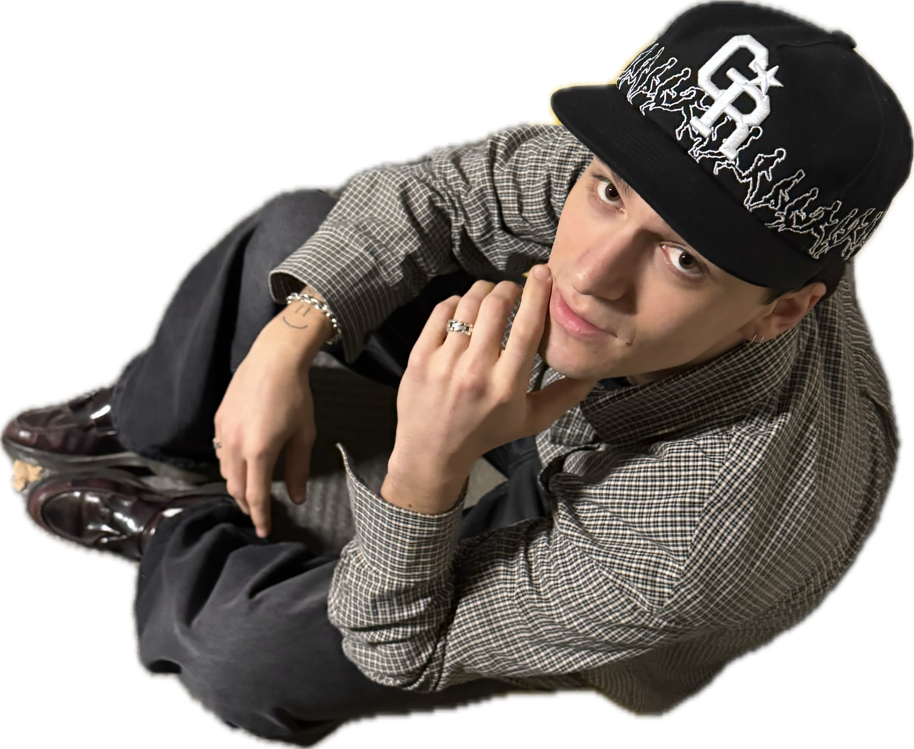

on a run
2026
Vienna
Vienna
Filming myself doing one of my hobbies and giving it a little spice afertwards

Medientechnik - HTL Leonding
Architecture - TU Wien
Videography
Photography
Editing
Architecture